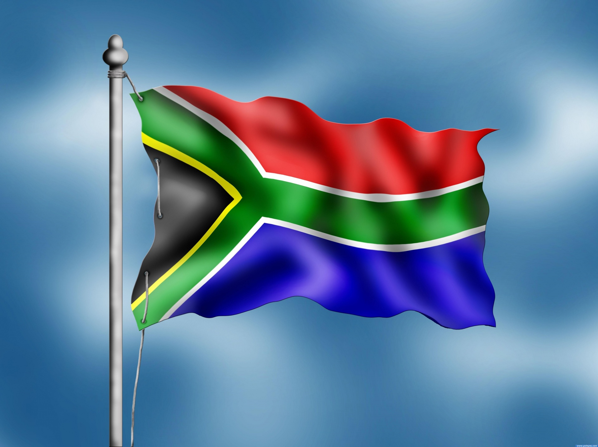
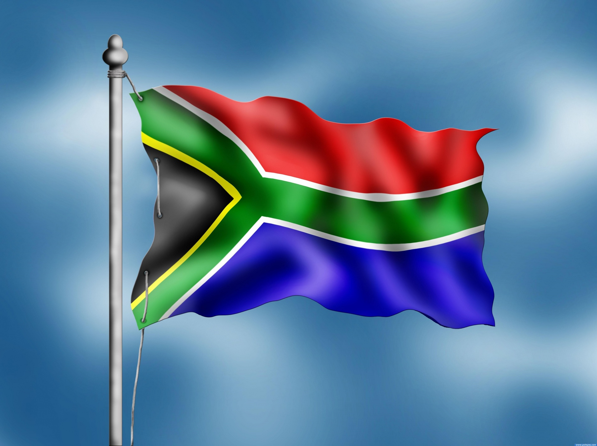

The Laundry hub organisation announced its formation on 27 January, 2019 in Soweto. The Organistaion was established to help our South African working force with their laundry issue as many of these South Africans would attend work with dirty, smelly clothings leading to bad humidity in work spaces. Some of these people live in poor conditions and can't afford a washing machine. This organization was formed by former Youth Enviroment inspector leader Likhaya Zweni. The organisation describes itself Clothing and bad, disgusting hygiene exterminator movement for economic emancipation and pleasing hygiene in workplases and homes.
Even though our organisation was established in 2019 we have managed to overcome the covid/qauritine wave, hence growing further forward ever since 2020 from 2021 to thus far that we have managed to reach over an average of 90 000 households across the whole country in which we are helping and serve 53 local community soccer,rugby,and cricket clubs and have over 92 live cites in the country
Laundry hub aims to help with curing unpleasant smells, dirty stains and uncomfortablility in terms of clothes, we aim to do this with determination and consistency associated with enviromental movement in South Africa meaning that we will help our South Africans in a healthy and eco-friendly manner.
Our mission is to keep our standard of cleaning services to the best it can be as we also look to extended our services internationally across South Africa and beyond. The best contribution we want to make on the communities is too make them feel comfortable in their own clothes increasing aura and relieving stress as this overloading chore is taking care of.
 
